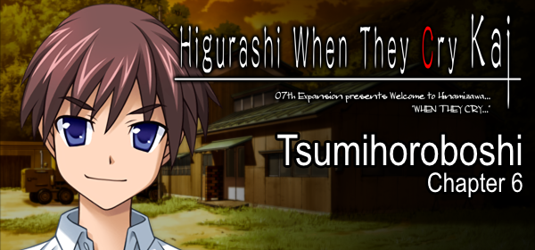
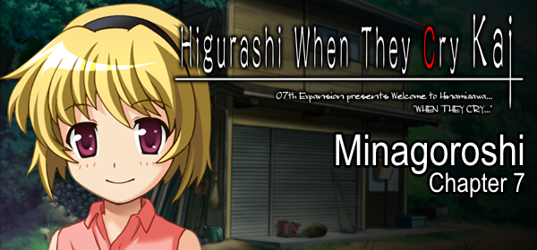

Higurashi no Naku Koro ni (Português Brasileiro)
Capítulos de Perguntas ( 無印 Mujirushi / 出題編 Shutsudai-hen / Question Arcs )
Capítulos de Respostas ( 解 Kai / 解答編 Kaitou-hen / Answer Arcs )
Cap. 5 - Meakashi
Cap. 6 - Tsumihoroboshi
Cap. 7 - Minagoroshi
Cap. 8 - Matsuribayashi (em breve)
Gratidão ( 礼 / Rei )
Conteúdo Extra

Kuradashi
Uma compilação de Fragmentos baseados em conceitos descartados da versão final de Higurashi no Naku Koro ni, lançados como livreto e adaptados para o formato de visual novel por fãs.
Página da tradução do projeto